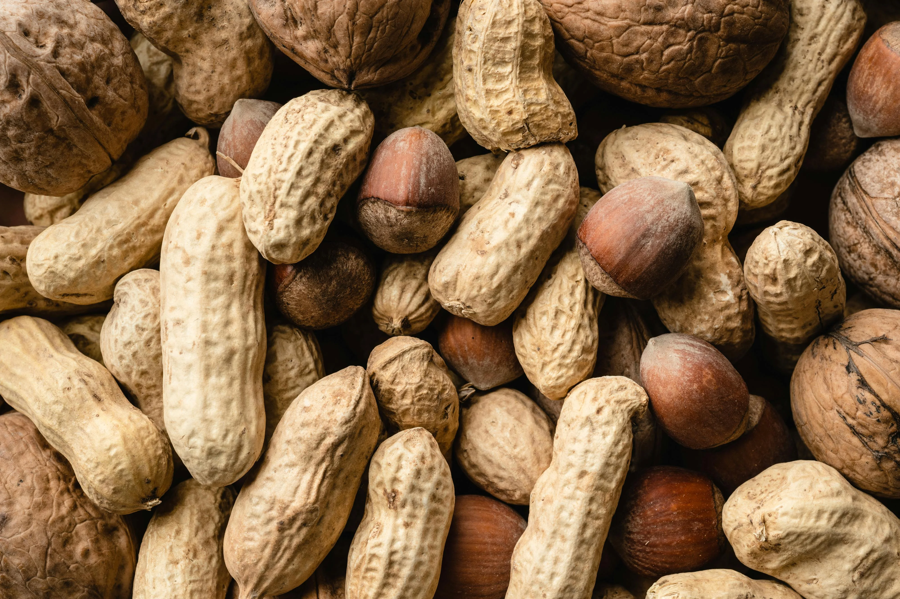
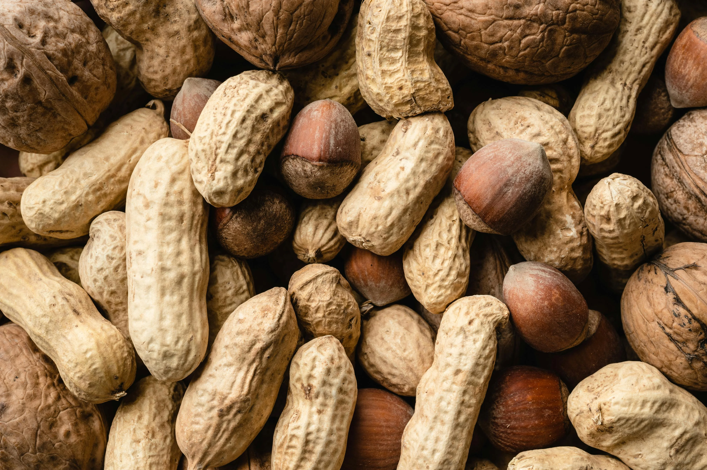

Nutrition Basics for Better Results
Published on Oct 25, 2025

Simple meal and timing tips to fuel your workouts and recovery. Fuel your circulation with nutrient-rich foods that support heart and organ health. Focus on fruits, vegetables, lean proteins, and healthy fats for lasting energy. Stay hydrated and limit processed foods to keep your blood flowing smoothly.
1.Eat a Balanced Plate
A balanced plate fuels your body with the right mix of nutrients for strength and endurance. Combine lean proteins, whole grains, colorful veggies,colorful fruits and healthy fats in every meal to give your body complete nourishment. This balance helps maintain steady energy, muscle growth, and faster recovery.
2 Stay Hydrated
Drink water consistently throughout the day to maintain energy and support organ function. Water supports every function in your body, from circulation to recovery. Drink steadily throughout the day and increase intake during workouts. Hydration keeps your body alert, energized, and glowing.

3.Choose Heart-Healthy Fats
Healthy fats keep your heart strong and support long-term energy for workouts. Include avocados, olive oil, nuts, and fish rich in omega-3s to improve circulation and reduce inflammation. They help reduce bad cholesterol and improve overall body performance and recovery.
 

4.Limit Processed Foods and Sugar
Cut back on processed snacks, sugary drinks, and fast foods that drain your energy. Whole, natural foods keep your body fueled and your metabolism balanced. Choose nourishment over convenience your long-term health will thank you.

5.Boost with Iron and Antioxidants
Iron supports oxygen flow to your muscles, keeping you energized during workouts. Antioxidants fight fatigue and help your body recover faster after training. Include leafy greens, beans, berries, and citrus fruits in your daily meals for a natural boost. Eat spinach, citrus fruits, and berries to enhance oxygen transport and protect blood vessels.